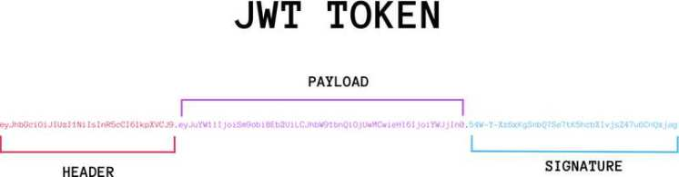
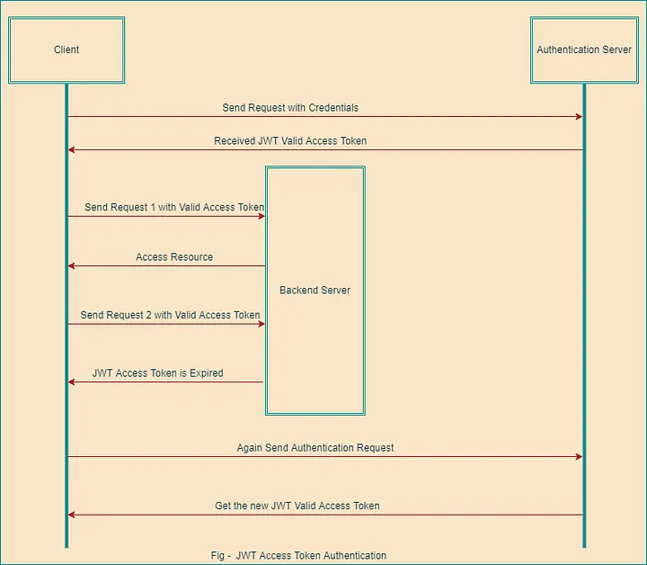

JSON Web Token（缩写 JWT）是目前最流行的跨域认证解决方案，本文介绍它的原理和用法。
互联网服务离不开用户认证。一般流程是下面这样。
1、用户向服务器发送用户名和密码。
2、服务器验证通过后，在当前对话（session）里面保存相关数据，比如用户角色、登录时间等等。
3、服务器向用户返回一个 session_id，写入用户的 Cookie。
4、用户随后的每一次请求，都会通过 Cookie，将 session_id 传回服务器。
5、服务器收到 session_id，找到前期保存的数据，由此得知用户的身份。
这种模式的问题在于，扩展性（scaling）不好。单机当然没有问题，如果是服务器集群，或者是跨域的服务导向架构，就要求 session 数据共享，每台服务器都能够读取 session。
举例来说，A 网站和 B 网站是同一家公司的关联服务。现在要求，用户只要在其中一个网站登录，再访问另一个网站就会自动登录，请问怎么实现？
一种解决方案是 session 数据持久化，写入数据库或别的持久层。各种服务收到请求后，都向持久层请求数据。这种方案的优点是架构清晰，缺点是工程量比较大。另外，持久层万一挂了，就会单点失败。
另一种方案是服务器索性不保存 session 数据了，所有数据都保存在客户端，每次请求都发回服务器。JWT 就是这种方案的一个代表。
JWT 的原理是，服务器认证以后，生成一个 JSON 对象，发回给用户，就像下面这样。
{
"姓名": "张三",
"角色": "管理员",
"到期时间": "2018年7月1日0点0分"
}以后，用户与服务端通信的时候，都要发回这个 JSON 对象。服务器完全只靠这个对象认定用户身份。为了防止用户篡改数据，服务器在生成这个对象的时候，会加上签名（详见后文）。
服务器就不保存任何 session 数据了，也就是说，服务器变成无状态了，从而比较容易实现扩展。
实际的 JWT 大概就像下面这样。

它是一个很长的字符串，中间用点（.）分隔成三个部分。注意，JWT 内部是没有换行的，这里只是为了便于展示，将它写成了几行。
JWT 的三个部分依次如下。
Header（头部）
Payload（负载）
Signature（签名）写成一行，就是下面的样子。
Header.Payload.Signature
下面依次介绍这三个部分。
Header 部分是一个 JSON 对象，描述 JWT 的元数据，通常是下面的样子。
{
"alg": "HS256",
"typ": "JWT"
}上面代码中，alg属性表示签名的算法（algorithm），默认是 HMAC SHA256（写成 HS256）；typ属性表示这个令牌（token）的类型（type），JWT 令牌统一写为JWT。
最后，将上面的 JSON 对象使用 Base64URL 算法（详见后文）转成字符串。
Payload 部分也是一个 JSON 对象，用来存放实际需要传递的数据。JWT 规定了7个官方字段，供选用。
iss (issuer)：签发人
exp (expiration time)：过期时间
sub (subject)：主题
aud (audience)：受众
nbf (Not Before)：生效时间
iat (Issued At)：签发时间
jti (JWT ID)：编号除了官方字段，你还可以在这个部分定义私有字段，下面就是一个例子。
{
"sub": "1234567890",
"name": "John Doe",
"admin": true
}注意，JWT 默认是不加密的，任何人都可以读到，所以不要把秘密信息放在这个部分。
这个 JSON 对象也要使用 Base64URL 算法转成字符串。
Signature 部分是对前两部分的签名，防止数据篡改。
首先，需要指定一个密钥（secret）。这个密钥只有服务器才知道，不能泄露给用户。然后，使用 Header 里面指定的签名算法（默认是 HMAC SHA256），按照下面的公式产生签名。
HMACSHA256(
base64UrlEncode(header) + "." +
base64UrlEncode(payload),
secret)算出签名以后，把 Header、Payload、Signature 三个部分拼成一个字符串，每个部分之间用"点"（.）分隔，就可以返回给用户。
前面提到，Header 和 Payload 串型化的算法是 Base64URL。这个算法跟 Base64 算法基本类似，但有一些小的不同。
JWT 作为一个令牌（token），有些场合可能会放到 URL（比如 api.example.com/?token=xxx）。Base64 有三个字符+、/和=，在 URL 里面有特殊含义，所以要被替换掉：=被省略、+替换成-，/替换成_ 。这就是 Base64URL 算法。
/**
* Decode a string with URL-safe Base64.
*
* @param string $input A Base64 encoded string
*
* @return string A decoded string
*/
public static function urlsafeB64Decode($input)
{
$remainder = strlen($input) % 4;
if ($remainder) {
$padlen = 4 - $remainder;
$input .= str_repeat('=', $padlen);
}
return base64_decode(strtr($input, '-_', '+/'));
}
/**
* Encode a string with URL-safe Base64.
*
* @param string $input The string you want encoded
*
* @return string The base64 encode of what you passed in
*/
public static function urlsafeB64Encode($input)
{
return str_replace('=', '', strtr(base64_encode($input), '+/', '-_'));
}您可以在下图中看到，当用户想要从后端服务器访问资源时，身份验证流程是如何为他们工作的。

首先，用户使用用户名和密码等凭据向身份验证服务器发送登录认证请求。
然后，身份验证服务器将验证该信息，用户提供的登录信息验证通过后，身份验证服务器将向用户颁发JWT有效访问令牌。
用户将获取到的jwt令牌储存在 Cookie 里面，也可以储存在 localStorage。
接下来，用户向后端服务器发送的每一个请求都要携带有效的JWT访问令牌，服务器验证令牌并向用户提供所请求的资源。
你可以把它放在 Cookie 里面自动发送，但是这样不能跨域，所以更好的做法是放在 HTTP 请求的头信息Authorization字段里面。
Authorization: Bearer
另一种做法是，跨域的时候，JWT 就放在 POST 请求的数据体里面。
当令牌过期时，用户向服务器发送请求，服务器对对用户做出响应告诉其令牌失效，请求失败
此时用户需要再次登录，将用户凭据发送到身份验证服务器，以获取新的JWT有效访问令牌，并将其存储在客户端的本地存储中。
（1）JWT 默认是不加密，但也是可以加密的。生成原始 Token 以后，可以用密钥再加密一次。
（2）JWT 不加密的情况下，不能将私密数据写入 JWT。
（3）JWT 不仅可以用于认证，也可以用于交换信息。有效使用 JWT，可以降低服务器查询数据库的次数。
（4）JWT 的最大缺点是，由于服务器不保存 session 状态，因此无法在使用过程中废止某个 token，或者更改 token 的权限。也就是说，一旦 JWT 签发了，在到期之前就会始终有效，除非服务器部署额外的逻辑。
（5）JWT 本身包含了认证信息，一旦泄露，任何人都可以获得该令牌的所有权限。为了减少盗用，JWT 的有效期应该设置得比较短。对于一些比较重要的权限，使用时应该再次对用户进行认证。
（6）为了减少盗用，JWT 不应该使用 HTTP 协议明码传输，要使用 HTTPS 协议传输。
JWT让服务器不需要保存任何 session 数据了，变成无状态，从而比较容易实现扩展。但上面也说到 JWT 一旦签发，在到期之前就会始终有效，无法在使用过程中废止某个 token，这样一旦token泄露会导致严重的安全问题。
通常情况下服务器还是需要对session、token等有比较高的掌控权，JWT只适用于用在一些对安全性要求不那么高的地方，即使token泄露也不会导致太严重后果。
当前人们对安全要求越来越高，并不建议使用JWT的鉴权方式
参考地址：
jwt官网
jwt php开源项目地址
阮一峰的网络日志
[1] jwt官网: https://jwt.io/[2] jwt php开源项目地址: https://github.com/firebase/php-jwt[3] 阮一峰的网络日志: http://www.ruanyifeng.com/blog/2018/07/json_web_token-tutorial.html